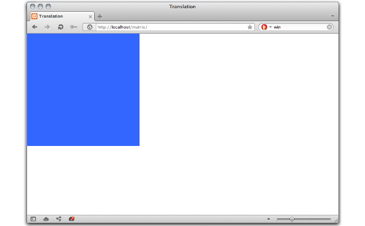
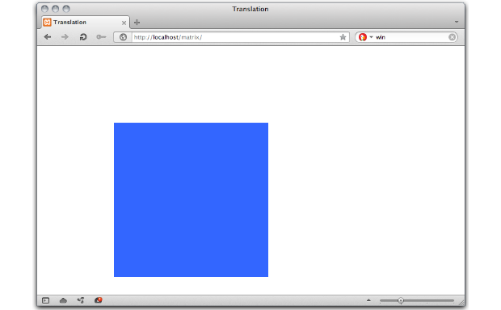
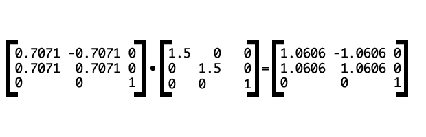
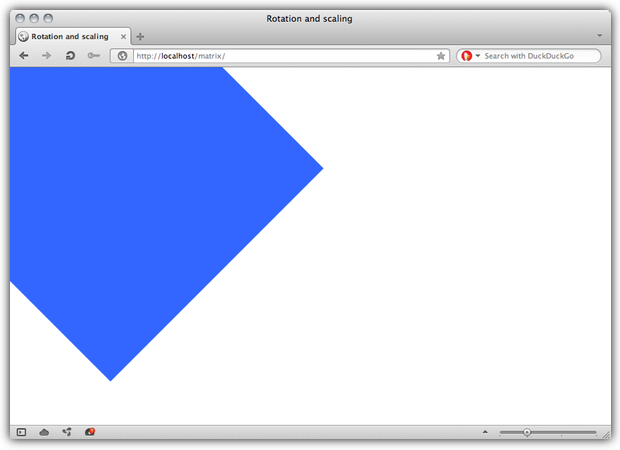

Understanding the CSS Transforms Matrix
- Introduction
- What is a matrix?
- Transforms and coordinate systems
- Calculating the transform: Matrix and vector math
- Compound transforms with the matrix
Introduction
The matrix functions — matrix() and matrix3d() — are two of the more brain-bending things to understand about CSS3 Transforms. In most cases, you'll use functions such as rotate() and skewY() for ease and clarity's sake. Behind every transform, though, is an equivalent matrix. It's helpful to understand a bit about how they work, so let's take a look.
CSS transforms are rooted in linear algebra and geometry. Though it helps a great deal to have some advanced math under your belt, it's possible to understand the matrix functions without it. You should, however, be familiar with CSS transforms. If you aren't read CSS3 transitions and 2D transforms.
In this article, I'll cover both the 3-by-3 matrix used for 2D transforms and the 4-by-4 matrix used for 3D transforms.
Note that as of this publication, Opera does not support three dimensional transforms. I've included the 2D matrix() equivalent where applicable.
I've also used un-prefixed versions of the transform properties in this article. In practice, these properties are still experimental and subject to change. Include the prefixed versions (-o-transform, for example) in your style sheet until they are finalized.
What is a matrix?
Matrix is a fancy math word for a rectangular array of numbers, symbols, or expressions,
(Figure 1). Matrices have many math and science applications. Physicists, for example, used them in the study of quantum mechanics. In the computer graphics realm, they're also used for things like — surprise! — linear transformations and projecting 3D images onto a 2D screen. That's precisely what the matrix functions do: matrix() allows us to create linear transformations, while matrix3d() lets us create the illusion of three dimensions in two dimensions using CSS.

Figure 1: An example of a matrix
We won't wade too far into the waters of advanced algebra here. You should be familiar with the Cartesian coordinate system. You may also want to review how to multiply matrices and vectors (or use a calculator, such as the one offered by Bluebit.gr).
The big point to understand is that a transform multiplies a matrix by the coordinates of a particular point (or points), expressed as a vector.
Transforms and coordinate systems
First let's talk about coordinate systems. Every document viewport is a coordinate system. The top-left point in the viewport is the origin, with (0,0) coordinates. Values increase to the right along the x-axis, and down along the y-axis. The z-axis determines the perceived distance from the viewer in the case of 3D transforms. Larger values appear to be closer and bigger; smaller values appear smaller and farther away.
When a transform is applied to an object, it creates a local coordinate system. By default, the origin — the (0,0) point — of the local coordinate system lies at the object's center or 50% 50% (Figure 2).

Figure 2: A local coordinate system.
We can change the origin of the local coordinate system by adjusting the transform-origin property (Figure 3). Using transform-origin: 50px 70px;, for example, puts the coordinate system origin 50 pixels from the left of the object's box, and 70 pixels from its top. Transforms for any point within the object's local coordinate system are relative to this local origin.

Figure 3: A local coordinate system, with a transform origin of (50px,70px). Also shown is a point at (30px,30px).
Browsers do these calculations for you whenever you apply a transform. You just need to know which arguments can help you achieve your desired effect.
Calculating the transform: Matrix and vector math
Let's look at an example using the 3-by-3 matrix used to calculate two dimensional transforms (Figure 4). The 4-by-4 matrix used for 3D transforms works the same way, with additional numbers for the additional z-axis.

Figure 4: The CSS two-dimensional transform matrix
We can also write this as transform: matrix(a,b,c,d,e,f), where a through f are numbers, determined by the kind of transform we wish to apply. Matrices are recipes of sorts for applying transforms. This will make more sense in a bit wen we look at some examples.
When we apply a 2D transform, the browser multiplies the matrix by a vector: [x, y, 1]. The values of x and y are the coordinates of a particular point within the local coordinate space.
To determine the transformed coordinates, we multiply each entity in each row of the matrix by its corresponding row in the vector. Then we add the products (Figure 5).

Figure 5: Multiplying a matrix by a vector
I know that looks like a bunch of meaningless numbers and letters. But as mentioned above, each type of transform has its own matrix. Figure 6 shows the matrix for a translation transformation.

Figure 6: the translation matrix.
The values tx and ty are the values by which the origin should be translated. We can also represent it using the vector [1 0 0 1 tx ty]. This vector serves as the arguments for the matrix() function as shown below.
#mydiv{
transform: matrix(1, 0, 0, 1, tx, ty);
}Let's transform an object that has its top-left corner aligned with the top-left corner of our viewport (Figure 7). Its global coordinates are (0,0).

Figure 7: An object with global coordinates of (0,0).
We’ll translate this object by 150 pixels along the x and y axes, using the default transform origin. What follows is the CSS for this transform.
#mydiv{
transform: matrix(1, 0, 0, 1, 150, 150);
}This, by the way, is the equivalent of transform: translate(150px,150px). Let’s calculate the result of this transform for a point at (220px,220px) (Figure 8).

Figure 8: Calculating a translation transform.
Transforms map coordinates and lengths from the object's local coordinate system to the previous coordinate system. Where a point is rendered in the viewport depends on the transform applied offset from the object’s start position. In this example, our point at (220px,220px) is now rendered at (370px,370px). Other coordinates within our object’s bounds have also been shifted by 150 pixels to the right, and 150 pixels down (Figure 9).

Figure 9: Our object after the translation is applied.
The translation matrix is a special case. It is both additive and multiplicative. A simpler way to solve this is would be to add the translation value to our point’s x and y coordinate values.
Calculating a three-dimensional transform
We covered the 3-by-3 translation matrix above. Let's try another example using the 4-by-4 transformation matrix for scaling (Figure 10).

Figure 10: The 4-by-4 transformation matrix for scaling.
Here sx, sy, and sz represent the scaling multipliers for each axis. Using the matrix3d function, this would be: transform: matrix3d(sx, 0, 0, 0, 0, sy, 0, 0, 0, 0, sz, 0, 0, 0, 0, 1).
Let's continue with our object from above. We're going to scale down along the x and y axes using the matrix3d() function as shown below.
#mydiv{
transform: matrix3d(.8, 0, 0, 0, 0, .5, 0, 0, 0, 0, 1, 0, 0, 0, 0, 1);
}This is the equivalent of transform: scale3d(0.8, 0.5, 1). Because we are only scaling along the x and y axes (creating a 2D transform), we could also use transform: matrix(.8, 0, 0, .5, 0, 0) or scale(.8,.5). You can see the effect of this transform in Figure 11.

Figure 11: A 300 pixel-by-300 pixel object after our scaling transform has been applied.
If we multiply this matrix by a coordinate vector [150,150,1], (Figure 12), we get the our point's new coordinates: (120,75,1).

Figure 12: Calculating a scaling transform.
Where to find matrix values
Matrix values for each of the transform functions are outlined in both the Scalable Vector Graphics specification and the CSS Transforms specification.
Compound transforms with the matrix
Finally, let's look at how to create a compound transform — a transform equal to applying multiple transform functions at the same time. For simplicity's sake, we'll stick to two dimensions. That means we will use the 3-by-3 transform matrix and the matrix() function. With this transform, we will rotate our object by 45° and scale it to 1.5 times its size.
The rotation matrix, expressed as a vector, is [cos(a) sin(a) -sin(a) cos(a) 0 0] where a is an angle. To scale, we need to use the matrix [sx 0 0 sy 0 0]. To combine, multiply the rotation matrix by the scaling matrix as shown in Figure 13 (both the sine and cosine of 45° is 0.7071).

Figure 13: Calculating a compound transform matrix.
Using CSS, this would be: transform: matrix(1.0606, 1.0606, -1.0606, 1.0606, 0, 1). Figure 14 shows the effect of this transform after it's applied.

Figure 14: Our 300 pixel-by-300 pixel object after it has been scaled and rotated.
Now let's calculate the new viewport coordinates of a point at (298,110) as shown in Figure 15.

Figure 15: Applying the transform.
Our point's new coordinates are (199.393px,432.725px).
Learn More
I hope this piece has demystified the CSS Transforms matrix functions a bit. If it hasn't, try consulting the resources below.
- Matrix (mathematics) from Wikipedia
- Understanding the Transformation Matrix in Flash 8 from Senocular
- Transformations from WolframMathWorld
Matrix texture cover image by Patrick Hoesly.
Tiffany Brown

Tiffany B. Brown is a freelance web developer based in Los Angeles.
This article is licensed under a Creative Commons Attribution 3.0 Unported license.
Comments
-

There's a mistake in the matrix-vector product as shown in Figure 5. ;)
-

Yes, I'm quite sure, because in general you do such a multiplication for a matrix A = (a_ik)_ik and a vector x=(x_k)_k like
-
XenoAntares is right. See http://en.wikipedia.org/wiki/Matrix_multiplication#Matrix_product_.28two_matrices.29
-

For the uninitiated to matrix math, you make this very confusing. First is figure 3. You put the arbitrary point (30,30) in there with no clarification that the point is based on the Local origin instead of global. Then the 3x3 matrix of figure 4 is said to be written "transform: matrix(a,b,c,d,e,f)" with no explanation for the missing terms or the out-of-order variables. If we take the 4x4 matrix as an example of how the CSS is written, the figure 4 matrix should have been "transform: matrix(a,c,e,b,d,f,0,0,1)". All of the following CSS for 3x3 matrices are written in the same assumed shorthand, again with no explanation.
No new comments accepted.XenoAntares
Wednesday, May 23, 2012
On the right hand side you have ax+cy+e and bx+dy+f, respectively.
XenoAntares
Wednesday, May 23, 2012
∑_{k=1}^n a_ik x_k
And anyways, why should there be two x per equation? ;) As you yourself note later on, the e and f coefficients bring the affine term (an offset) into the equation for the new coordinate.
Darko Pantić
Wednesday, May 23, 2012
Chris
Thursday, October 11, 2012
Next is the description of the matrix math itself: "To determine the transformed coordinates, we multiply each entity in each row of the matrix by its corresponding row in the vector." The 'corresponding row' would seem to imply that each term in the matrix's first row would be multiplied by 'x', the vector's first row, the matrix's second row by 'y', and so on. Added to the odd shorthand for the 3x3 matrix, the neophyte is sure to be totally confused by now, and reduced to using the example as a script instead of understanding a concept.
I would suggest to any technical writer, if writing an article targeted at an uninitiated audience, have it proofread by someone representative of that audience that the author trusts to give good, intelligent feedback.